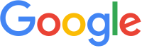
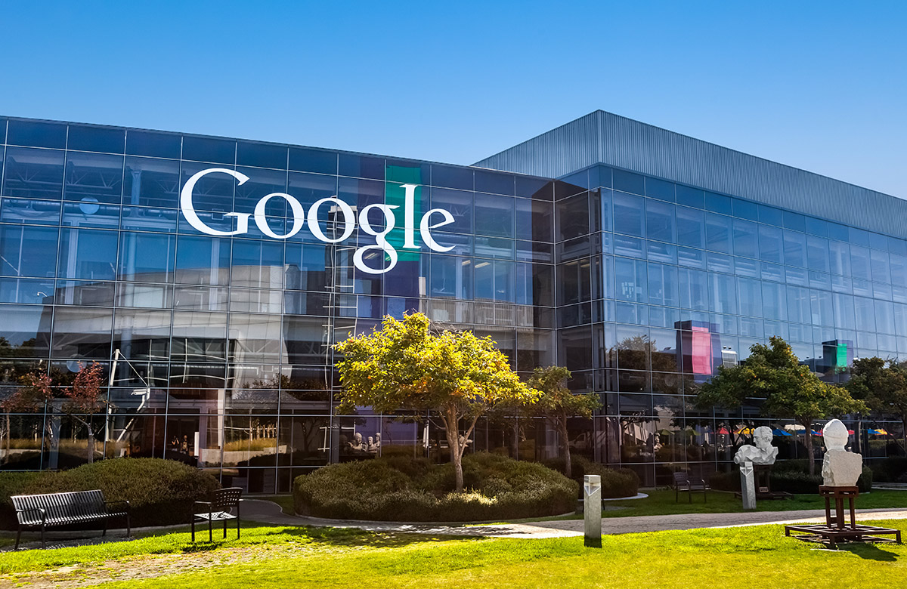
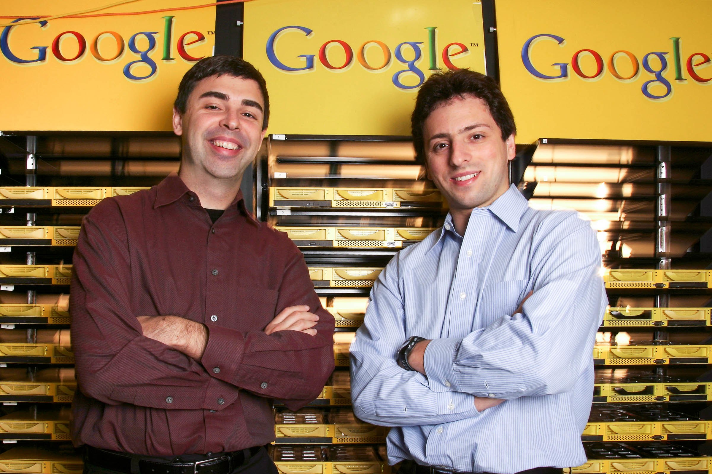
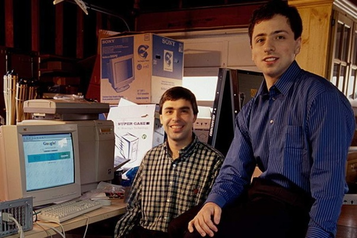
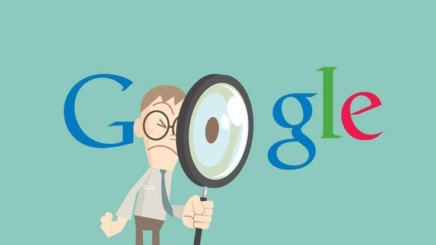

Google LLC — транснациональная корпорация из США в составе холдинга Alphabet, инвестирующая в интернет-поиск, облачные вычисленияи рекламные технологии.
Google поддерживает и разрабатывает многочисленные интернет-сервисы и продукты (см.: Список сервисов и инструментов Google) и получает прибыль в первую очередь от рекламы через свою программу Ads[11]. Она считается одной из технологических компаний «большой четверки» наряду с Amazon, Meta, Apple и Microsoft[12][13][14].

Компания основана Ларри Пейджем и Сергеем Брином. Впервые она была зарегистрирована как частная компания 4 января 1996 года, а 19 августа 2004 года начала продажу своих акций на фондовом рынке[15]. Тогда Ларри Пейдж, Сергей Брин и Эрик Шмидт договорились о совместной работе в Google в течение двадцати лет, до 2024 года[16]. Заявленной миссией компании с самого начала была «организация мировой информации, обеспечение её доступности и пользы для всех»[17], а неофициальный лозунг компании, придуманный инженером Google Полом Бакхейтом, — «Не будь злом» (англ. Don’t be evil)[18][19]. В 2003 году компания переехала в свою нынешнюю штаб-квартиру в Маунтин-Вью (штат Калифорния). 15 октября 2016 года компания была реорганизована в международный конгломерат Alphabet Inc.
 
Google управляет более чем миллионом серверов в центрах обработки данных по всему миру [20], ежедневно обрабатывает более миллиарда поисковых запросов[21] и 24 петабайт пользовательских данных[22][23][24]. Быстрый рост Google с момента её основания привёл к появлению большого числа продуктов, не связанных непосредственно с главным продуктом компании — поисковой системой. У Google есть такие онлайн-продукты как почтовый сервис Gmail, социальная сеть Google+ (закрыт 2 апреля 2019 года). У компании есть и настольные продукты, такие как браузер Google Chrome, программа для работы с фотографиями Picasa (закрыта с 1 мая 2016 года, на смену пришел сервис Google Фото) и программа мгновенного обмена сообщениями Hangouts. Кроме того, Google ведёт разработку мобильной операционной системы Android, используемой на большом количестве смартфонов, а также операционной системы Google Chrome OS и устройства Google Glass.
| Год | Выручка (млрд. долл. США) | Чистая прибыль (млрд. долл. США) | Рентабельность чистой прибыли (%) | Основные факторы, повлиявшие на прибыль |
| 2021 | 257,64 | 76,03 | 29,5% | Рост рекламных доходов, увеличение спроса на облачные сервисы |
| 2022 | 282,84 | 59,97 | 21,2% | Снижение рекламных расходов, рост операционных расходов, экономическая неопределенность |
| 2023 | 307,39 | 73,80 | 24,0% | Восстановление рекламного рынка, оптимизация расходов, развитие AI |
По данным Alexa, основной сайт Google — google.com — является самым посещаемым сайтом Интернета, а многочисленные международные сайты Google (google.co.in, google.co.uk и т. д.) входят в первую сотню по посещаемости, как и несколько других сайтов сервисов Google — YouTube, Blogger и Orkut[25]. В мае 2011 года количество уникальных посетителей сайтов Google за месяц впервые превысило 1 миллиард человек[26].

Из-за популярности поисковой системы в английском языке появился неологизм to google или to Google (аналог в русском компьютерном сленге — гуглить), использующийся для обозначения поиска информации в Интернете с помощью Google. Именно с таким определением глагол занесён в наиболее авторитетные словари английского языка — Оксфордский словарь английского языка и Merriam-Webster[8], хотя в других источниках[126] приводятся примеры его использования для обозначения поиска вообще чего-либо в Интернете.